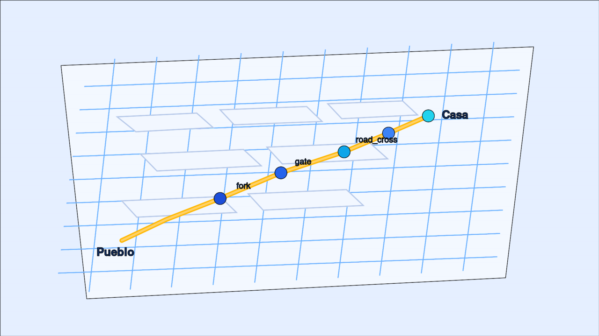

Mapeo de Ojén (GoPro + 3D)
Cartografiamos el pueblo a pie para hacerlo más accesible: aceras, pendientes, verjas y bifurcaciones, en un mapa offline en el móvil.

Cómo se captura
- Paseamos con GoPro 11 en timelapse, GPS activo, cámara hacia abajo (pértiga 2 m).
- Cada foto lleva coordenadas GPS.
- OpenDroneMap reconstruye en 3D (ortofoto, DTM, nube de puntos).
- En QGIS se digitaliza el eje, pendiente, ancho y nodos.
- Se exporta un bundle offline (GeoJSON + JSON) al móvil.
Descargar checklist de captura (PDF) — imprimir y marcar en el campo.
Tres capas en el móvil
| Capa | Origen | Aporta |
|---|---|---|
| OSM | Overpass → caché | Clasificar urbano / campo / arbolado |
| Rutas + heatmap | Paseos con cámara | Perfil lateral aprendido |
| Corredor ODM | GoPro + ODM + QGIS | Eje, pendiente, ancho, nodos |
Archivos del bundle
Copiar a files/maps/ojen_odm/ o incluir en assets:
corridor_path.geojson— eje del corredorcorridor_profile.json— alongM, bearing, gradePct, widthM, segmentTagcorridor_nodes.json— fork, gate, road_cross, destination
Comando ODM sugerido
docker run -ti --rm -v /ruta/proyecto:/datasets/code opendronemap/odm \
--project-path /datasets --dtm --dem-resolution 5 --orthophoto-resolution 2